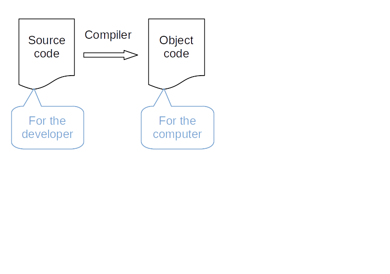
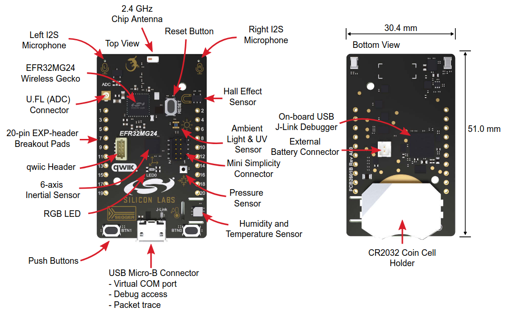
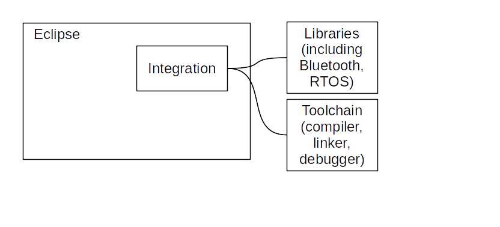

Software development - introduction
Cross development

Icons made by
Freepik from
www.flaticon.com
Reminders
Usual development



Compiler + linker (+ other utilities): toolchain
Cross development for microcontroller board

Transferring the executable file to the microcontroller board can be done in several ways:
- Over a debug interface
- Over a serial link while the microcontroller runs a bootloader
- Over a wireless connection while the microcontroller runs a bootloader
- Etc.
The operation: flashing.
The executable file: firmware.
Debugging
- The development PC can control the execution of the application running in the microcontroller
- Requires a debug interface on the microcontroller board and a serial link
As seen in the previous page: the debug interface can be used to flash the microcontroller.
- Every microcontroller manufacturer: full development environnement
- Often free
- Often based on Open Source software (Eclipse, gcc, openOCD, etc.)
Practice session 01
Build and run an Hello World application for the EFR32xG24 Dev Kit
EFR32MG24

Source:
EFR32MG24 Datasheet
xG24 Dev Kit
Source:
xG24 Dev Kit User's Guide
Reference documentation
Development environments
Several possibilities:
- Simplicity Studio v5 (SSv5) - based upon Eclipse IDE
- VS Code + extension
- ...
We will use SSv5.
SSv5


Practice session 01 - step 1
- Using git, clone the
RTOS-presentationGitHub repository - Follow the instructions provided by the
embedded-systems-for-ML/practice-sessions/01-HelloWorld-step1/README.mdfile.
Debugging
Debugging: process of finding the root cause of a bug.
Always try to reduce time devoted to debugging. How to do this is not part of this course, even if it contains some related information.
Generic architecture

- Microcontroller controlled by the debug probe
- JTAG: an industry standard, initially developped for verifying printed circuit boards (PCB)
- SWD: an Arm standard, fully debug oriented
- Debug probe controlled by the debugger server
- Debugger client used to send commands: run, pause, step, set breakpoint, etc.
For most of the dev boards, a simple probe is part of the board:

Practice session 01 - step 2
- Follow the instructions provided by the
embedded-systems-for-ML/practice-sessions/01-HelloWorld-step2/README.mdfile.